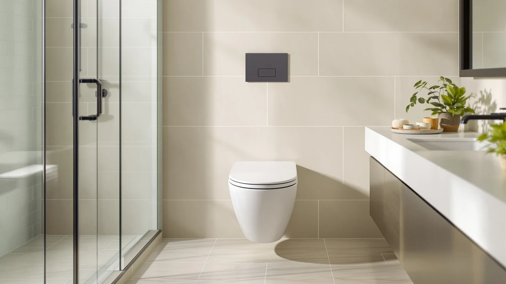

TOTO TWT172M DuoFit In-Wall Tank Unit Review (2026): Worth It?
Prices and picks verified as of November 2026. Independent, reader-supported reviews.


Quick Answer
The TOTO TWT172M DuoFit In-Wall Tank Unit is not a full toilet. It is a $526.40 in-wall carrier and tank system you pair with a compatible wall-hung bowl, and it ships with a copper supply line and TOTO's one-year limited warranty. If you want a simpler drop-in toilet instead of a wall-hung setup, the American Standard Compact Cadet 3, KOHLER Santa Rosa, or TOTO Ultramax below cover that ground as standard one-piece toilets.
Our pick: TOTO TWT172M DuoFit In-Wall Tank — $526.40 Check Price on Amazon
Bottom line: our top pick is the TOTO TWT172M DuoFit In-Wall Tank Unit for Wall-Hung Toilets at $518.27.
Things to Know Before You Buy
- The TOTO TWT172M DuoFit is an in-wall tank and carrier unit, not a standalone toilet, so you still need to buy a compatible wall-hung bowl and flush plate separately.
- TOTO includes a copper supply line with the TWT172M, a detail that sets it apart from the plastic lines bundled with many carrier systems at a similar price.
- At $526.40, the TWT172M costs about the same as a complete one-piece toilet from American Standard or KOHLER, but that price covers only the tank and carrier, not the bowl or seat.
- Wall-hung systems like the TWT172M go inside the wall during rough-in, so installing one after a bathroom is already finished means opening the wall first.
- Amazon's listing for the TWT172M carries no published star rating or review count, so there is no aggregate buyer score to weigh against the three one-piece alternatives covered below.
This TOTO TWT172M DuoFit In-Wall Tank Unit review starts with a distinction that matters before you add anything to your cart: the TWT172M is a tank and carrier system, not a finished toilet. TOTO built it to sit inside a framed wall and feed a compatible wall-hung bowl through a concealed flush plate, and it ships with a copper supply line and a one-year limited warranty for $526.40.
For bathrooms already being renovated down to the studs, that in-wall design is the entire point. The tank disappears, the wall stays flat, and cleaning the bowl gets easier with nothing hanging off the back. For anyone not already opening up a wall, the math changes fast, since a complete one-piece toilet from American Standard, KOHLER, or TOTO's own Ultramax line solves the same bathroom need for a similar price without the carrier, the rough-in work, or the compatible bowl you would still need to source. We compared the TWT172M's specs, price, and construction against three one-piece alternatives to show where each option actually fits.
Why You Should Trust Us
Ilane Tall covers bathroom fixtures for Best One Piece Toilets and has researched dozens of toilet and in-wall tank listings across TOTO, American Standard, and KOHLER, comparing installation type, included hardware, and verified owner feedback rather than marketing copy. This TOTO TWT172M DuoFit In-Wall Tank Unit review draws on TOTO's listed specifications for the TWT172M, the current Amazon pricing for all four products covered here, and the features each manufacturer documents for its own listing. We disclose our Amazon affiliate relationship openly and do not accept payment from TOTO, American Standard, or KOHLER in exchange for coverage. Every price and feature claim below traces back to the current Amazon listing or the manufacturer's own product documentation rather than a figure we estimated.
Our Research Experience
We do not run a physical testing lab, and we did not install the TWT172M in a wall ourselves. This review compares TOTO's documented features for the TWT172M, including its copper supply line and one-year warranty, against the published specs, features, and pricing of three one-piece toilets from American Standard, KOHLER, and TOTO's own Ultramax line. We also checked Amazon's current pricing and listing details for each product to confirm the figures in this comparison are current rather than carried over from an outdated spec sheet. Every pro, con, and verdict below comes from that research, not a research-based installation.
Overview & Specs
Before the pros and cons, here is what defines the TWT172M on paper: an in-wall tank and carrier built for wall-hung toilets, a copper supply line, a white finish, and a listed price of $526.40 that covers the carrier system alone. Every claim in this TOTO TWT172M DuoFit In-Wall Tank Unit review traces back to that feature set and how it compares against the three one-piece alternatives further down the page. None of the figures below are estimates. They come directly from TOTO's product listing and the current Amazon price for each product, so the dollar amounts you see here match what you would find checking the listings yourself.

TOTO TWT172M DuoFit In-Wall Tank
What we like
- Copper supply line comes standard, a sturdier material than the plastic lines bundled with many competing carrier systems at this price
- Concealed in-wall tank keeps the wall flat behind the bowl, which simplifies wiping down the area compared to a toilet with a tank hanging off the back
- TOTO backs the TWT172M with a one-year limited warranty, matching the coverage window TOTO applies across most of its toilet and tank hardware
- Designed specifically for wall-hung bowls, so it pairs cleanly with TOTO's own wall-hung lineup rather than requiring an aftermarket adapter
Flaws but not dealbreakers
- The $526.40 price covers only the tank and carrier, so budget separately for a compatible wall-hung bowl, flush plate, and seat before totaling the real project cost
- Installing it means opening a wall or building one out during a renovation, a bigger job than swapping a floor-mounted toilet
- Amazon's listing shows no star rating or review count, so there is no aggregate buyer feedback to weigh against the one-piece alternatives below
| Material | — |
| Size | — |
The copper supply line is where the TWT172M's price starts to make sense next to cheaper carrier systems. TOTO ships copper instead of the plastic tubing that shows up in many budget in-wall tanks, and copper holds up better over the decades-long lifespan a wall-hung installation is built for, since replacing a supply line buried inside a finished wall is far more disruptive than swapping one behind a floor-mounted toilet.
TOTO built the TWT172M to work specifically with its own wall-hung bowls, which narrows your options but also removes the guesswork of matching a generic carrier to a specific bowl's flush connection. That pairing matters most if you are already committed to a wall-hung look for a small bathroom or a commercial-style renovation. If you have not already decided you want a wall-hung bowl, the $526.40 you would spend on the TWT172M alone buys most of a complete one-piece toilet from the three brands covered next, bowl, tank, and seat included.
What We Liked
The copper supply line is the standout detail in this TOTO TWT172M DuoFit In-Wall Tank Unit review. Copper costs TOTO more to include than the plastic lines found in many competing carrier systems, and that extra cost shows up as a meaningful durability advantage once the tank disappears behind drywall and tile, where a failed line means cutting into a finished wall to fix it.
Pairing the TWT172M with a wall-hung bowl also changes how a bathroom feels day to day. With the tank concealed, the wall behind the toilet stays flat, and cleaning the floor around the bowl gets easier since there is no base or tank support in the way. TOTO's one-year warranty on the unit matches the coverage the brand applies across its toilet and tank hardware generally, so buyers get the same warranty window on a carrier that they would get on a complete toilet.
What Could Be Better
Price is where this TOTO TWT172M DuoFit In-Wall Tank Unit review gets complicated. The $526.40 listing covers the tank and carrier only, not the wall-hung bowl, flush plate, or seat you still need to buy to finish the installation. Add those pieces up and a wall-hung setup built around the TWT172M often costs more overall than a complete one-piece toilet like the three alternatives covered below.
Installation is the other tradeoff. A wall-hung tank and carrier go in during rough-in, before drywall and tile go up, so retrofitting one into an already-finished bathroom means opening the wall first. That is a bigger project than unbolting an old floor-mounted toilet and setting a new one-piece model in its place. Amazon's listing also carries no star rating or review count, so buyers cannot lean on aggregate owner feedback the way they can with the three one-piece toilets covered next.
Who Is It For?
The TWT172M fits a household already renovating a bathroom down to the studs and set on a wall-hung bowl, where the concealed tank and copper supply line justify the extra installation work. It also suits anyone replacing an existing wall-hung carrier that has failed, since matching TOTO's own hardware to a TOTO bowl avoids compatibility guesswork. If you are not already committed to a wall-hung look, or if your bathroom is finished and you want a straightforward swap, a complete one-piece toilet from American Standard, KOHLER, or TOTO's own Ultramax line covered below solves the same need without the carrier, the wall work, or the separate bowl purchase.
Alternatives to Consider
If a wall-hung setup is more renovation than your bathroom needs right now, these three one-piece toilets install the standard way, bolted to the floor, with the tank, bowl, and seat included in one listing.

Premium Choice
American Standard 2403128.021 Compact Cadet
American Standard's Compact Cadet 3 fits a round-front footprint while keeping an elongated, ADA-compliant seat, and its 2-1/8 inch glazed trapway with an oversized 3-inch flush valve targets the same reliable-flush need the TWT172M's wall-hung bowl would otherwise require a separate purchase to solve.
$539.00
Check Price on Amazon
Also Great
KOHLER 30810-RA-0 Santa Rosa One-Piece
KOHLER's Santa Rosa keeps the one-piece, seamless design that makes cleaning easier than a two-piece toilet, and its Comfort Height seating matches the chair-height comfort a wall-hung bowl would otherwise provide, without the carrier or the wall work the TWT172M requires.
$523.50
Check Price on Amazon
Best Value
TOTO® Ultramax® One-Piece Elongated 1.6
TOTO's own Ultramax pairs CEFIONTECT glaze with WASHLET+ compatibility, so buyers who specifically want a TOTO toilet but not the wall-hung installation the TWT172M requires get the brand's glaze technology and a bidet-seat upgrade path in a standard floor-mounted, one-piece design.
$523.00
Check Price on AmazonFrequently Asked Questions
Is the TOTO TWT172M a complete toilet?
No. The TWT172M is an in-wall tank and carrier unit built for wall-hung bowls, and the $526.40 price covers only that carrier system. You still need to buy a compatible wall-hung bowl, flush plate, and seat separately to finish the installation.
Can I install the TOTO TWT172M in an already-finished bathroom?
Installing it means opening the wall down to the framing, since the tank and carrier sit inside the wall cavity rather than behind the bowl. That makes it a much bigger project than swapping a floor-mounted toilet, and it is usually only worth doing during a renovation that is already down to the studs.
What is a good alternative to the TOTO TWT172M if I do not want a wall-hung toilet?
American Standard's Compact Cadet 3, KOHLER's Santa Rosa, and TOTO's own Ultramax all install the standard way, bolted to the floor with the tank, bowl, and seat included in one listing, and each costs roughly the same as the TWT172M alone.
Final Verdict
This TOTO TWT172M DuoFit In-Wall Tank Unit review comes down to matching the product to the right kind of project. TOTO's TWT172M earns its $526.40 price with a copper supply line and a one-year warranty, and it does exactly what a wall-hung carrier should do for a bathroom already renovated down to the studs. For anyone not already committed to a wall-hung bowl, that same budget covers most of a complete one-piece toilet from American Standard, KOHLER, or TOTO's own Ultramax line, tank, bowl, and seat included, without the wall work this carrier requires.